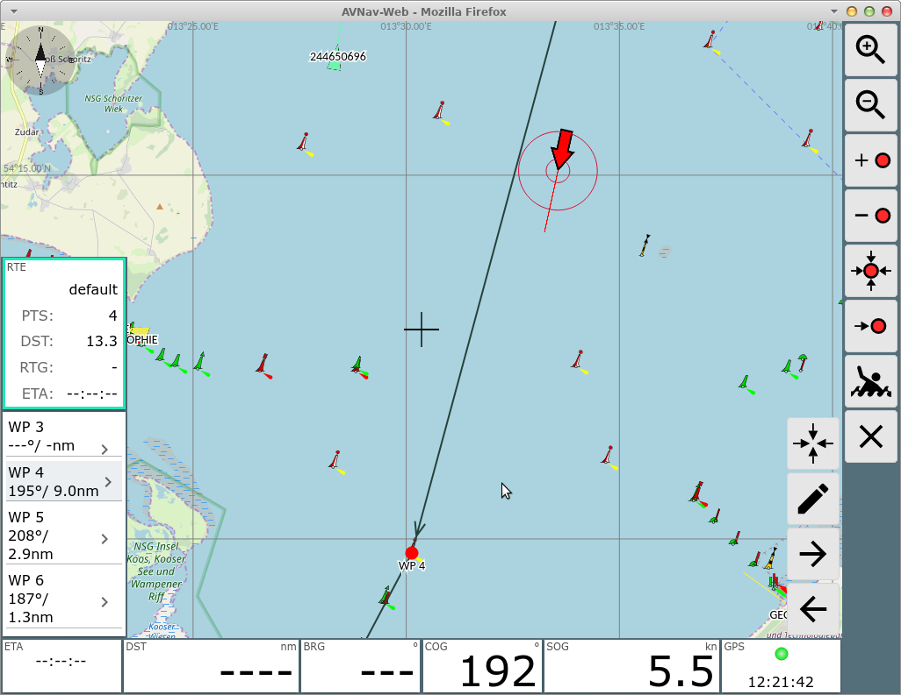

Der Routen-Editor ist über den Button  von der Navigationsseite
erreichbar.
von der Navigationsseite
erreichbar.

Buttons
| Icon | Name | Funktion |
| ZoomIn | Hereinzoomen |
|
| ZoomOut | Hinauszoomen |
|
| NavAdd | Einen neuen Punkt zur Route hinzufügen. Der Kartenmittelpunkt (Kreuz) wir als neuer Punkt hinter dem momentan rot markierten Punkt der Route hinzugefügt. |
|
| NavDelete | Löschen des momentan rot markierten Punktes der Route |
|
| NavToCenter | Verschieben des momentan rot markierten Punktes der Route auf den
Kartenmittelpunkt |
|
| NavGoto | Starte die Navigation zum momentan rot markierten Punkt der Route |
|
| MOB | Mann über Bord(siehe Hauptseite) | |
| Cancel | Zurück zur Navigationsseite |
Auf dieser Seite kann man eine Route bearbeiten bzw. erzeugen.
Zu jeder Zeit gibt es einen aktiven Wegepunkt (rot dargestellt, links in der Anzeige grau unterlegt. Die meisten Aktionen bezihen sich auf diesen Wegepunkt. Er kann durch Anklicken links in der Liste oder durch Anklicken auf der Karte geändert werden.
Wenn man die momentan aktive Route bearbeitet, wird das durch einen roten Rahmen links um die Routen-Info angezeigt. Falls eine andere Route bearbeitet wird, ist dieser grün.
Wenn man den Editor verlässt, geht die Anzeige zur aktiven Route zurück.
Alle Änderungen werden sofort wirksam, es gibt kein undo.
Auf der linken Seite werden die Wegepunkte der aktuellen Route angezeigt. Dazu jeweils die Kurse und Distanzen für die Abschnitte. Im oberen Teil die Gesamtlänge der Route sowie die Gesamtstrecke sowie die ETA. Durch Anklicken kann man einen Wegepunkt aktivieren.
Durch nochmaligen Klick auf einen links bereits markierten Punkt wird eine Eingabemaske aufgerufen, in der man den Wegepunkt bearbeiten kann.
Ein Klick auf das Route Info Feld (links oben) führt zur Route Liste. Hier kann man den Namen der Route ändern oder alle Wegepunkte löschen.
Ein Klick auf die linken unteren Anzeigen zeigt einige zusätzliche Buttons.

Mit diesen kann zwischen den Punkten der Route gewechselt werden bzw. der aktuelle Punkt kann bearbeitet werden.
Ein Klick auf die rechten Anzeigen zentriert die Karte auf die Bootsposition.